Stardust Cursaders è un gruppo che operava internazionalmente. Tuttora, nessuno di questi eroi è possibilitato al combattimento, ma si tratta del gruppo con la potenza media più alta, e con il potenziale latente più promettente
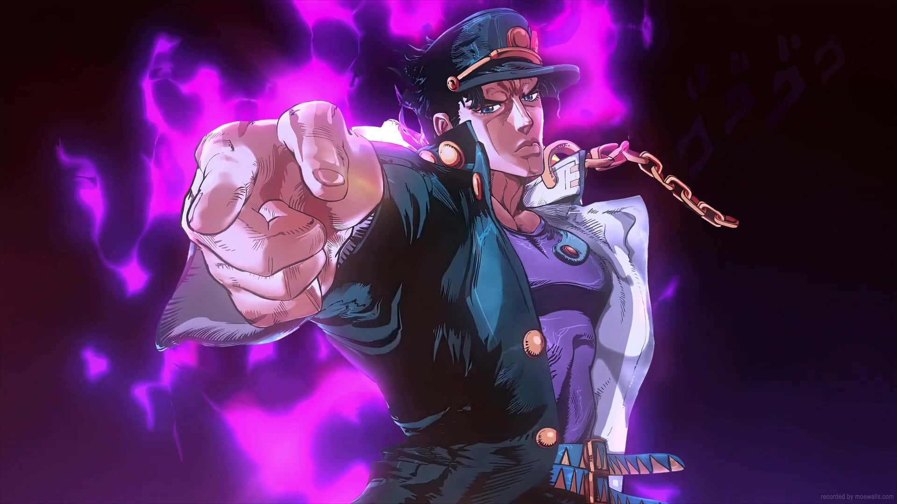 |
Nome: Jotaro |
|---|
Jotaro Kujo è un discendente dei Joestar, che ha portato la maggior parte dei contributi nel tempo. Inizialmente ingaggiato
Insieme agli Stardust Cursaders, inizia con loro il viaggio in Egitto per combattere Dio Brando, il vampiro centenario con
lo stand che rappresenta nei tarocchi il mondo: The World.
Il suo stand, Star Platinum, ha un raggio d'azione di circa 5 metri, ma una potenza impareggiabile a livello di forza
bruta. In più, permette di fermare il tempo in base all'affinità che egli ha con lo stand. Durante il suo viaggio in
Egitto, è riuscito a fermare il tempo per circa 5 secondi, e quello è tuttora il picco della sua potenza, visto il
peggioramento da Morio-Cho in poi.
Si tratta del nostro miglior combattente negli Stardust Cursaders, e i suoi contributi si espandono anche in posti che
verranno menzionati in futuro tali Morio-Cho (Giappone) e in Florida (USA).
Purtroppo, Jotaro Kujo è morto in Florida a 40 anni
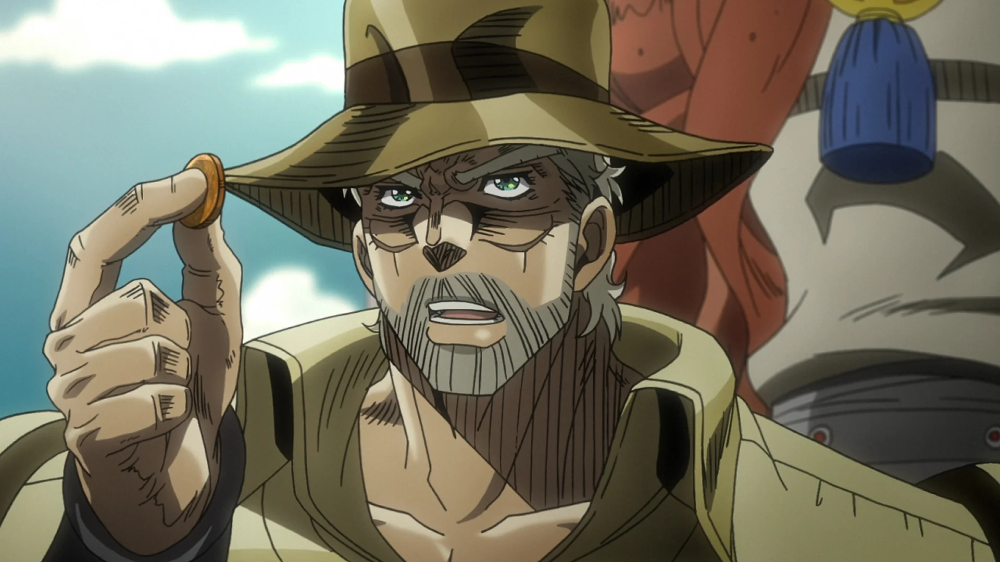 |
Nome: Jospeh |
|---|
Joseph Joestar è un combattente che si fa valere già da prima che Dio sbloccasse uno stand:
ha un perfetto controllo dell'Hamon, uno stand molto utile e una mente non da poco (anche se ora inizia
a perdere colpi).
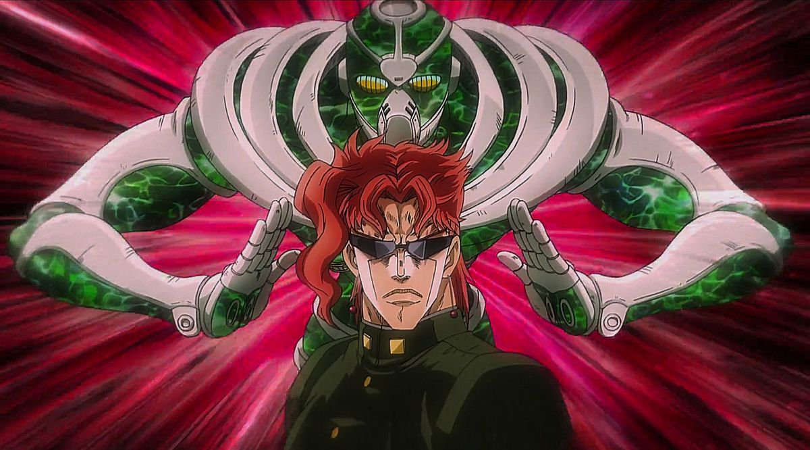 |
Nome: Kakyoin |
|---|
Kakyoin Noriyaki
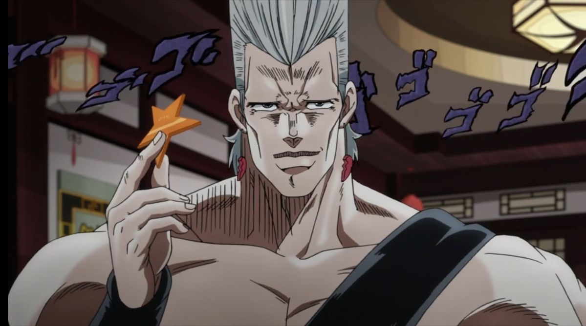 |
Nome: Jan Pierre |
|---|
Polnareff
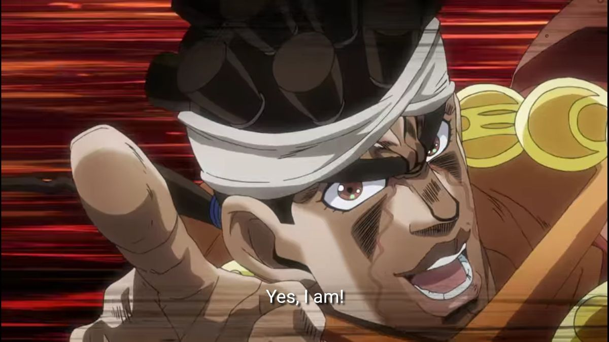 |
Nome: Mohamed |
|---|
Mohamed Avdol
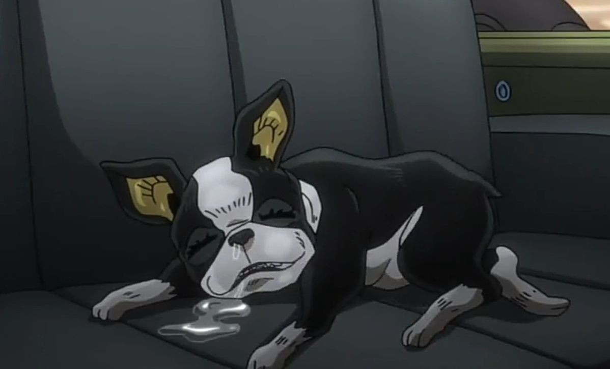 |
Nome: Iggy |
|---|
Iggy
Diamond is Unbreakable è un gruppo che opera principalmente nella cittadina di Morio-Cho, ed è composta principalmente da ragazzi. Una cosa positiva di questi elementi è che oltre ad avere stand incredibilmente particolari, sono tutti ancora vivi. I due combattentiJotaro KujoeJoseph Joestar hanno contribuito con questi ragazzi, e si sono trovati tanto bene come nella loro squadra originale
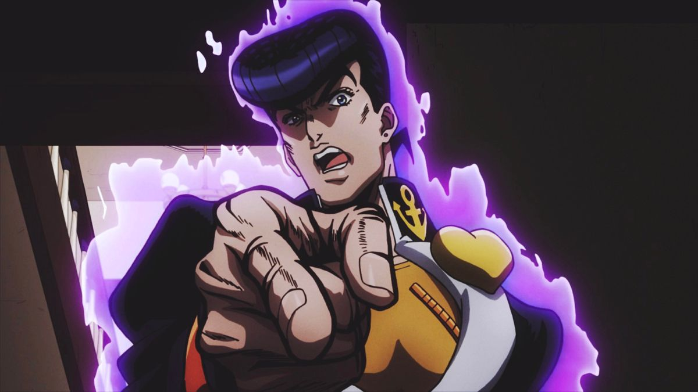 |
Nome: Josuke |
|---|
Josuke Higashikata
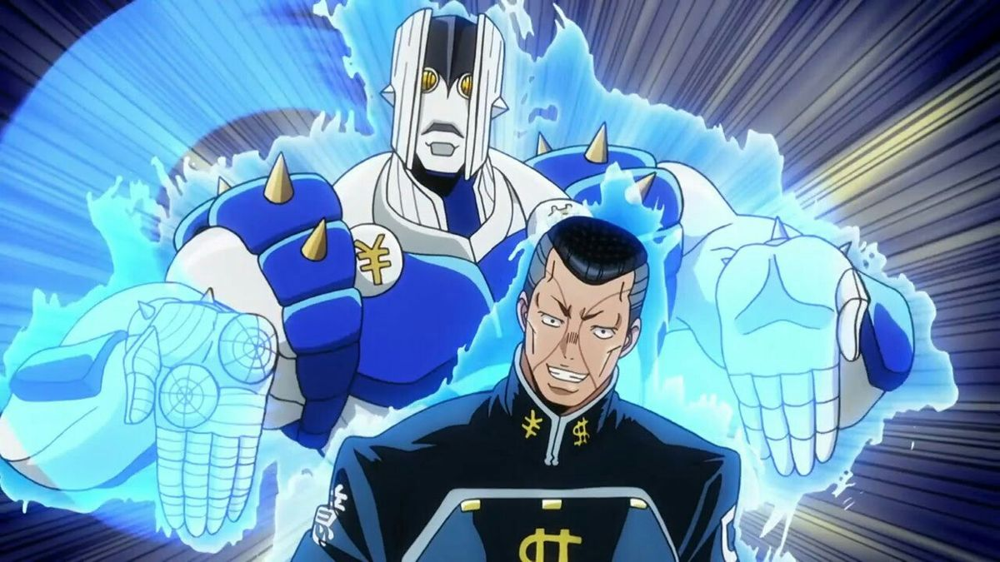 |
Nome: Okuyasu |
|---|
Okuyasu Nijimura
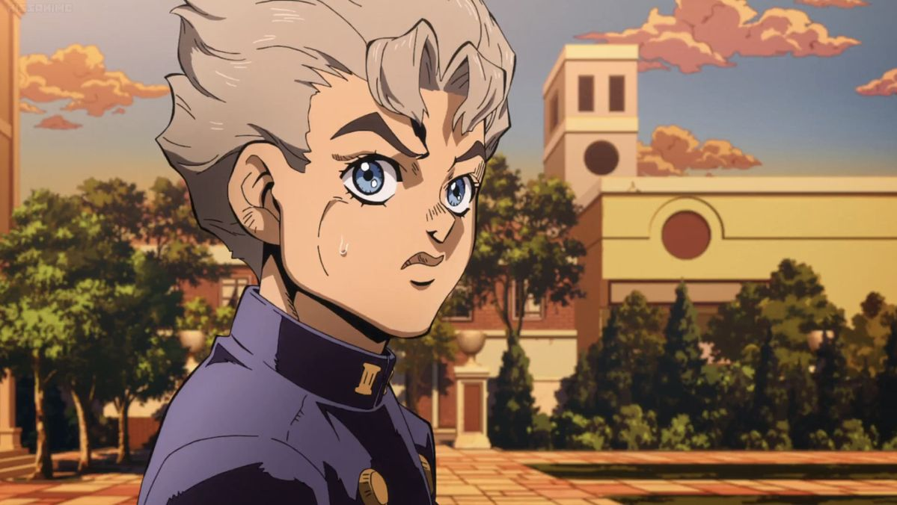 |
Nome: Koichi |
|---|
Koichi Hirose
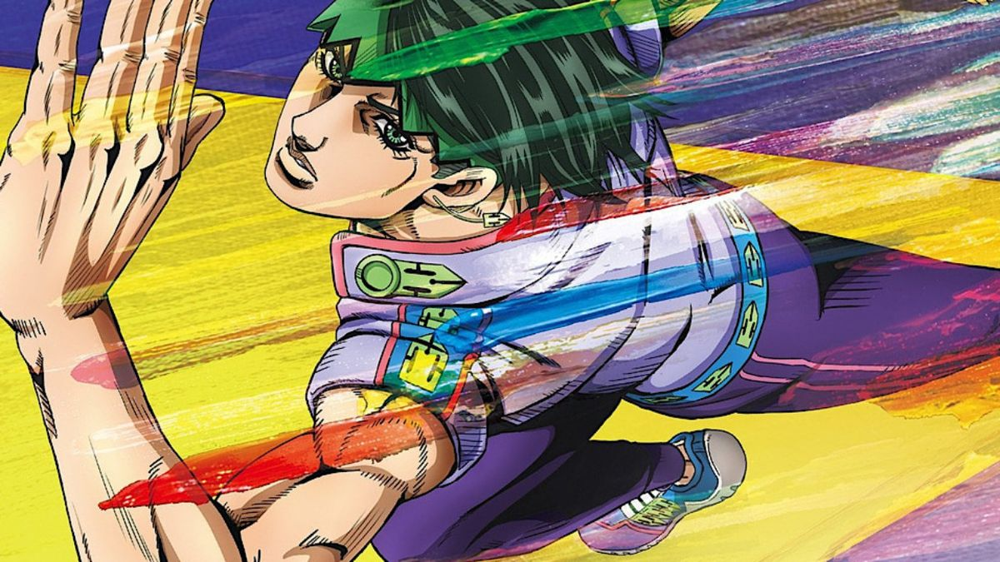 |
Nome: Rohan |
|---|
Rohan Kishibe
Vento Aureo è un gruppo che opera in Italia, un po' in tutta la nazione.
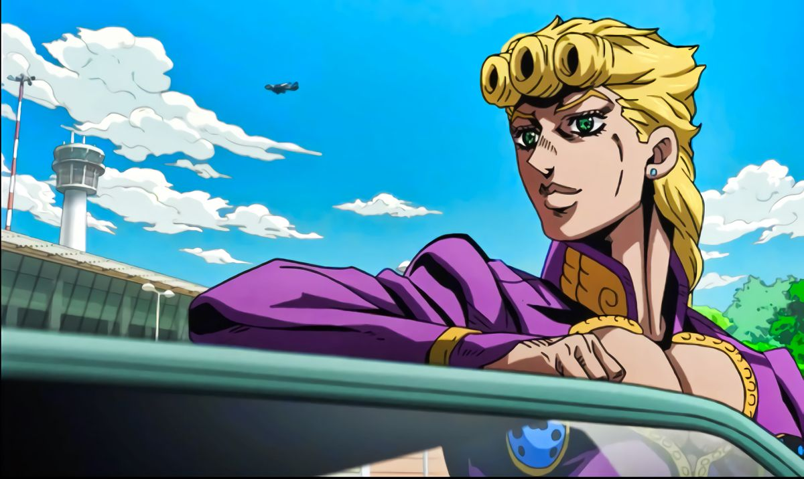 |
Nome: Giorno |
|---|
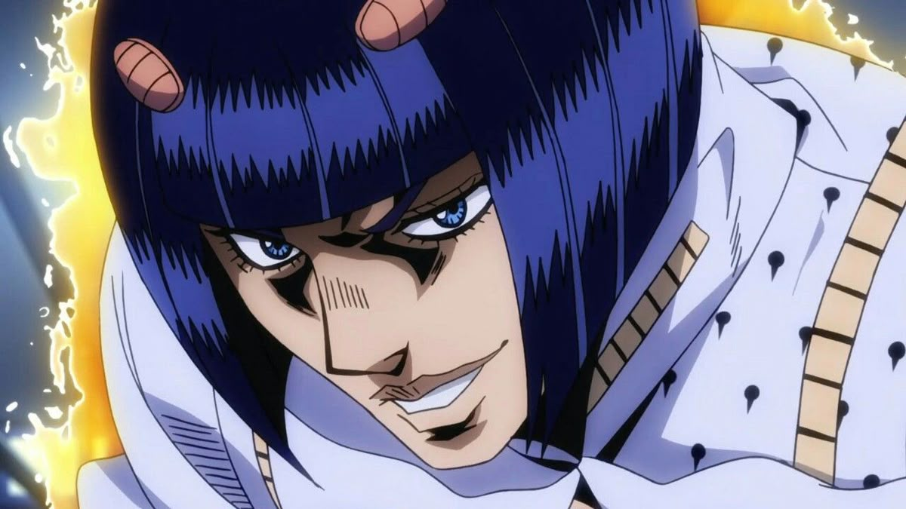 |
Nome: Bruno |
|---|